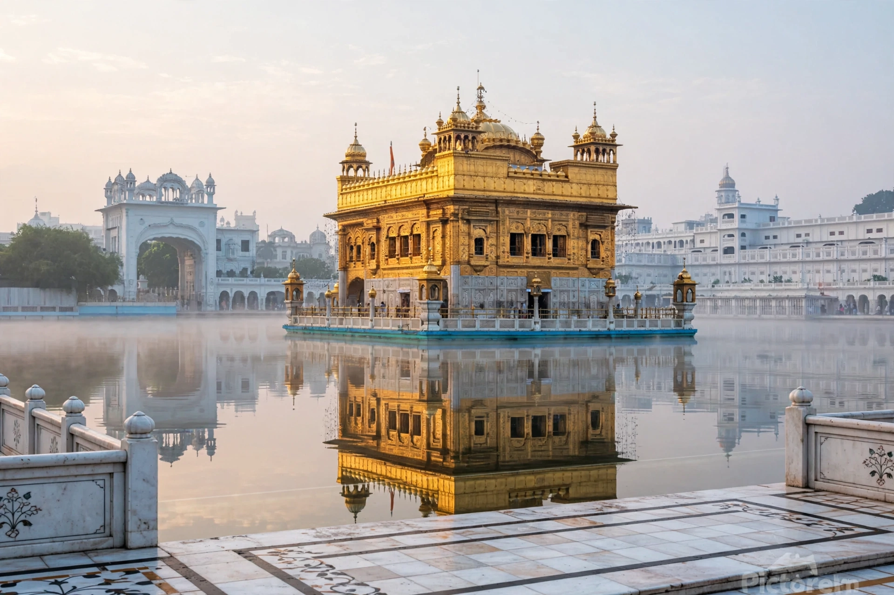

From Wikipedia, the free encyclopedia
| Sikhism | |
|---|---|
| Founder | Guru Nanak (1469–1539) |
| Origin | Punjab, late 15th century |
| Scripture | Guru Granth Sahib |
| Place of worship | Gurdwara |
| Holiest site | Golden Temple (Harmandir Sahib), Amritsar |
| Adherents | c. 25–30 million worldwide |

Sikhism is a monotheistic religion founded by Guru Nanak in the Punjab region of South Asia in the late 15th century. Sikhs believe in one God (Ik Onkar), the equality of all people, honest work, sharing with others (vand chakko) and selfless service (seva). Authority passed through ten human Gurus; the tenth, Guru Gobind Singh, vested it permanently in the scripture, the Guru Granth Sahib, and founded the Khalsa order in 1699. With roughly 25–30 million adherents, Sikhism is among the world's youngest major religions.
Sikhs reject caste by birth, ritualism and ascetic withdrawal, aiming instead for a householder's life of devotion and action, overcoming the five vices (lust, anger, greed, attachment, pride). Worship centres on the gurdwara, where the Guru Granth Sahib is enthroned and the langar — a free vegetarian kitchen open to all — embodies equality. Initiated Khalsa Sikhs keep the Five Ks, including uncut hair (kesh) under a turban and a steel bracelet (kara). The Golden Temple in Amritsar, rebuilt in marble and gold in the early 19th century, is the faith's holiest shrine.
The Gurus led a community that, under Mughal persecution (two Gurus were martyred), became militarised in defence; Banda Singh Bahadur and later the Sikh Empire of Maharaja Ranjit Singh (1799–1849) ruled Punjab before British annexation. Partition in 1947 split Punjab between India and Pakistan; a large diaspora now lives in Canada, Britain and elsewhere. The 1984 storming of the Golden Temple by Indian troops and the anti-Sikh violence that followed remain defining traumas.
Guru Nanak, Guru Granth Sahib, Golden Temple, Punjab, Hinduism